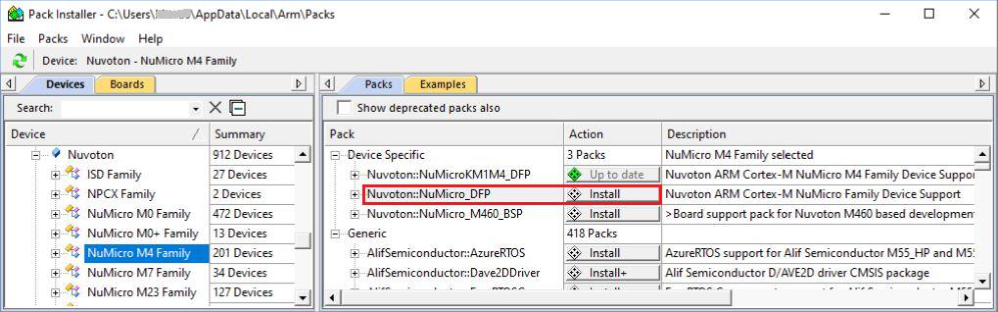
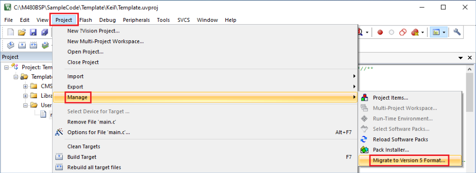
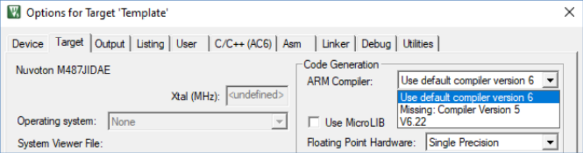
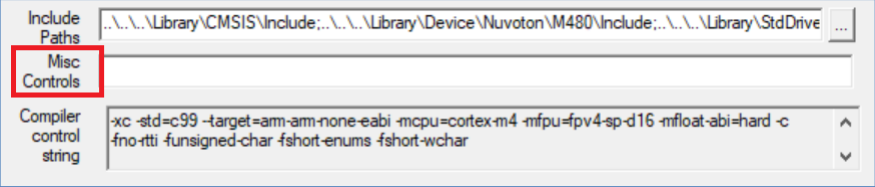
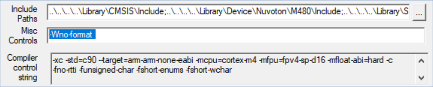
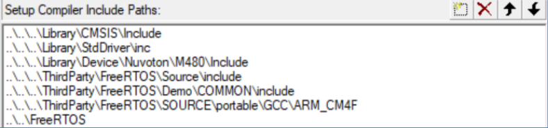
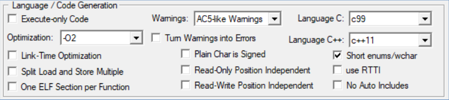
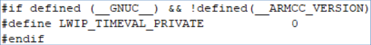

1 Overview
Arm 컴파일러 6(AC6)은 MDK 버전에서 사용 가능
5. Arm 컴파일러 6은 신기술을 기반으로 하기 때문에 이전 Arm 컴파일러와 부분적으로만 호환됩니다.
5. 이 애플리케이션 노트는 소스 코드 포팅에 대한 요약 가이드를 제공합니다.
자세한 내용을 보려면 온라인에서 "Migrate Arm Compiler 5 to Arm Compiler 6"을 검색하여 MDK 튜토리얼 PDF 문서를 얻으십시오.
2.1 Arm Keil MDK Nuvoton Edition
Arm과 Nuvoton은 소프트웨어 개발자에게 Arm Cortex-M0, M0+, M23, M33, M4, M55, M7 및 M85와 같은 Arm Cortex-M 코어 기반의 모든 Nuvoton 장치에 대한 지원을 포함하여 상업용으로 무료로 사용할 수 있는 전문 도구 제품군인 Keil MDK Nuvoton Edition – Full Cortex-M을 제공합니다.
이 무료 서비스는 Keil MDK 버전 5.37 이상에서 사용할 수 있으며 Arm Compiler 6만 지원합니다.
Keil MDK Nuvoton Edition은 Nuvoton 공식 웹사이트(https://www.nuvoton.com/tool-and-software/ide-and-compiler/keil-download/)에서 다운로드할 수 있습니다. 웹페이지의 단계에 따라 설치 및 활성화를 완료하세요.
2.2 DFP Supporting
Pack Installer에서 Install을 클릭하여 Nuvoton에서 제공하는 DPF(Device Family Pack)를 다운로드하고 설치합니다. Arm 컴파일러 6을 사용하려면 최소한 다음 DFP 버전을 사용하는 것이 좋습니다.
- Nuvoton.NuMicro_DFP.1.3.25.pack 이상

3 Arm 컴파일러 5에서 컴파일러 6으로 마이그레이션
이 섹션에서는 Arm 컴파일러 5에서 컴파일러 6으로 샘플 코드를 마이그레이션하는 간단한 프로세스를 보여줍니다. 샘플 코드 마이그레이션에 대한 전체 참조는 4장을 참조하세요.
Arm 컴파일러 6은 다양한 경고 메시지를 제공합니다. 마이그레이션의 첫 번째 단계에서는 오류 메시지에 집중하기 위해 경고 수준을 "경고 없음"으로 전환하는 것이 좋습니다.
마이그레이션의 기본 단계는 다음과 같습니다.
- 해당 NuMicro 시리즈 BSP(컴파일러 6 지원)에서 retarget.c 및 start_xxx.s를 얻습니다.
- 프로젝트 파일 확장자를 *.uvproj에서 *.uvprojx로 변경합니다.
- μVision IDE에서 Arm 컴파일러 6으로 전환합니다.
- μVision IDE에서 표시되지 않는 진단 메시지를 제거합니다.
Arm 컴파일러 5에 표시되는 모든 경고를 표시하려면 다음을 수행하면 됩니다.
- μVision IDE에서 "AC5와 유사한 경고"를 선택하십시오.
3.1 retarget.c 및 start_xxx.s 얻기
Arm 컴파일러 6 어셈블리 구문은 이제 Arm 스타일이 아닌 GNU 스타일과 호환됩니다. 컴파일 오류를 해결하는 간단한 방법은 Arm Compiler 6을 지원하는 NuMicro 시리즈에 해당하는 최신 BSP에서 retarget.c 및 start_xxx.s를 가져온 다음 이를 소스 코드로 바꾸는 것입니다. 시작하기 전에 소스 코드의 백업 복사본을 만드는 것이 좋습니다.
NuMicro 시리즈 BSP를 다운로드하려면 OpenNuvoton 웹사이트(https://github.com/OpenNuvoton)를 방문하세요.
3.2 프로젝트 파일을 *.uvprojx로 변경
1. 원본 Keil 프로젝트 *.uvproj를 엽니다.
2. 메인 메뉴 바에서 프로젝트 > 관리 > 버전 5 형식으로 마이그레이션…을 선택합니다.
3. 마이그레이션이 완료되면 프로젝트가 *.uvprojx로 저장됩니다. 대상 메모리/디버거 설정이 변경되었을 수 있습니다. 확인하고 업데이트해주세요.

3.3 Arm 컴파일러 6으로 전환
1. Keil 프로젝트를 열고 프로젝트 > 대상 옵션을 선택합니다.
2. Arm 컴파일러를 MDK에 포함된 버전 6.x로 설정합니다.
3. 메인 페이지로 돌아가려면 확인을 클릭하세요.

3.4 Remove Suppressed Diagnostic Messages
1. Keil 프로젝트를 열고 프로젝트 > 대상 옵션을 선택합니다.
2. C/C++(AC6) 탭의 기타 컨트롤에서 --diag_suppress 매개변수를 제거합니다.
3. 메인 페이지로 돌아가려면 확인을 클릭하세요.

4 Special Sample Code
3장에서 언급한 기본 방법 외에도 마이그레이션 단계에는 잠재적인 컴파일 오류를 해결하기 위한 추가 설정도 포함됩니다. 이 장에서는 MDK 버전 5.41을 사용하여 Arm 컴파일러 5에서 컴파일러 6으로 마이그레이션하는 방법을 보여주기 위해 M480 BSP의 여러 샘플 코드를 예로 사용합니다. 각 샘플 코드마다 설정이 조금씩 다를 수 있으니 참고하세요.
4.1 StdDriver/HSOTG_Dual_Role_UMAS
1. retarget.c 및 start_M480.s를 교체하십시오.
2. 프로젝트 파일 확장자를 *.uvprojx로 변경합니다.
3. Arm 컴파일러 6으로 전환합니다.
4. C/C++(AC6) 탭의 기타 컨트롤에 -Wno-format을 추가하여 C 및 C++ 코드의 형식 문자열과 관련된 경고를 억제합니다.
5. 프로젝트를 다시 빌드합니다.

4.2 StdDrvier/FreeRTOS
1. retarget.c 및 start_M480.s를 교체하십시오.
2. 프로젝트 파일 확장자를 *.uvprojx로 변경합니다.
3. Arm 컴파일러 6으로 전환합니다.
4. port.c를 RVDS에서 GCC 버전으로 변경합니다. 또한 컴파일러 포함 경로를 수정하십시오.
(ThirdParty\FreeRTOS\Source\portable\GCC\ARM_CM4F)
5. C/C++(AC6) 탭에서 언어 C를 C99로 설정합니다.
6. 프로젝트를 다시 빌드합니다.


4.3 NuMaker-PFM-M487/LwIP_MQTT
1. retarget.c 및 start_M480.s를 교체하십시오.
2. 프로젝트 파일 확장자를 *.uvprojx로 변경합니다.
3. Arm 컴파일러 6으로 전환합니다.
4. C/C++(AC6) 탭의 기타 컨트롤에서 --diag_suppress를 제거합니다.
5. port.c를 RVDS에서 GCC 버전으로 변경합니다. 또한 컴파일러 포함 경로를 수정하십시오.
(ThirdParty\FreeRTOS\Source\portable\GCC\ARM_CM4F)
6. C/C++(AC6) 탭에서 언어 C를 C99로 설정합니다.
7. lwipopts.h에서 __GNUC__ 매크로 감지를 수정합니다.
참고: Arm 컴파일러 6에서는 __GNUC__ 매크로를 정의하여 잘못된 코드가 컴파일될 수 있습니다.
